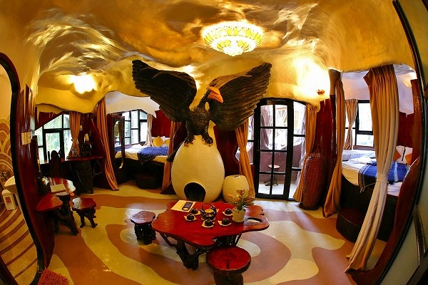

ダラットでの宿泊先は
クレイジーハウスという
かなり変わったホテルにした。
この建物は竣工当時から珍奇な建物として有名で、
ぐんにゃり建築好きの私としてはダラットに行ったら絶対泊まりたい宿であった。
旅行前にチェックしたら各種ホテルサイトで予約できるのね。迷わず予約しましたよ！
そんなクレイジーハウスに到着すると大勢の人が。
何でも日中は一般の観光客に有料で開放しているのだとか。
観光スポットの余り多くない街だけにたくさん来ているなあ。
ではでは早速ホテル内を見物させてもらいましょうか。
敷地内にはいくつかの建物があり、それらがいくつもの通路などで複雑につながっている。
こちらの巨大な樹木のようなタワーが一応メインの建物、ということになろう。
ドイツ表現主義建築の傑作、アインシュタイン塔をねじってひねって潰して伸ばしたようなぐにゃんとした塔。
見ているだけでうっとりしちゃうじゃない（個人の感想です）。
ぐんにゃりとしたフォルムだけでなく、ディテールもぐんにゃりしている。
ついでに魚眼レンズを多用しているんで写真自体もぐんにゃりしてます。
皆さんの心の眼で脳内補正してくださいませ。ご協力お願いいたしますよ。
溶けかかったロウソクのような異様な世界観にお客さんも大興奮。
勿論私も大興奮！
早速中に入ってみよう。
中に入るとそこは海底をイメージした世界。
造形的にはキテるが、外観に比べればテーマも統一されてるし、まあ比較的マトモなエリアと言えよう。
チビッ子も大興奮
フードとドリンクの店。
価格はベトナムの物価からするとかなりお高めでした。
建物の一部はまだ未完成だった
2階はこの建物の図面や写真が展示されていた。
中央部は海の世界。
この建物の平面図。
とても建築の平面図には見えない。
まるで生物の細胞図のようだ。
この建物を設計したのは
ダン・ヴェト・ガーという女性。
モスクワ大学で学んだ建築家である。
オープンは1990年。
当時はそのあまりにも特異な外観からその是非を問う論争が巻き起こったが、有名になるにつれ今では街の名物になりつつある。
吹き抜けから１階を見ると…サメが口を広げていた。
２階から一旦外部に出るとそこには凄い光景が広がっていた。
細長い通路が建物と建物の間を縦横無尽に広がっているのだ。
その幅は人一人がやっと通れるほど。
すれ違うのは
かなり命がけの所業でございます。
さらに手すりがあまり高くないので、高所恐怖症の方はかなりヤバイのではなかろうか。
屋根の上やら屋根の中やら狭い通路があちこちにつながっていて、迷路のようだ。
裏側にはまだまだ建設中の箇所も。
先程の海底世界の吹き抜けの上はこんなことになっている。
この階段も上り下りするのにはちょっとした勇気が必要だ。
屋上から見渡すダラットの街。
今回のベトナムの旅は結局ほとんど曇天だったなあ。
階段が狭くすれ違い出来ないので上と下の人同士がアイコンタクトでどっちが先に行くかを決めなければならない。
細い通路はそれぞれの建物を結び、あちこち移動できるようになっている。
便利と言えば便利だが、実用的な通路ではないので彷徨うためのツールと割り切った方がよさそうだ。
見物客の皆さん、写真撮影に余念がありません。
逆SNS映えというんでしょうか…。
メチャ気張ったジャージのロシア人カップル。
ロシア人って独特のファッションセンスを持っており、ジャージがオシャレ！という日本のどこぞの階級の方々に似たマインドをお持ちのようだ。
しかもモデルのような体型の人が「どこに売ってるんだ！」と突っ込みたくなるような凄いデザインのジャージを着こなしてらっしゃるのが面白くって。
奇妙な建物のあちこちで彼女がポーズを決め、彼氏が延々と撮影していた。
こちらは中国の団体さん。
悪夢の中のディズニーランドみたいな建物の前で記念撮影。
てなわけでチェックインの時間になったので部屋に入ってみる。
巨木のようなタワーの内部が客室になっている。
うわあ、部屋の中もぐんにゃりぐんにゃり。

部屋の中央には鷲がつばさを広げており、その足元の卵は暖炉になっていた。
何だか嫌な寝汗をかきそうな部屋だ。
しかもまだ見学者がうろうろしている時間なので、部屋の中を観ようと常にドアはガンガン開けようとするし、窓の外には通路があって大勢人が行きかってるし…。
ちなみにバスタブは異様に大きかったが、水量がチョボチョボしか出なかったので全然お湯が溜まりませんでした…。
ここには10室のゲストルームがあり、それぞれ違うデザインなのだとか。
下の階の部屋をチト覗いたが巨大な虎が横たわっている部屋でした。
設備は兎も角、広さの割には宿泊料はそんなに高くはなかった。
そして何よりうれしいのは、夜や朝、ほとんど人がいないホテル内をウロウロできること。
これは宿泊客だけに与えられたスペシャルなプレゼントだ。
ほとんど人がいない空中通路や洞窟のような廊下を行ったり来たりするのは、まるで
おとぎ話の世界に一人で迷い込んだかのような気分になる。
ガウディやドイツ表現主義の建築、イタリアのグロッタ、軍艦島、手掘り洞窟、胎内樹型、大観音の胎内巡り、九龍城…
自分が今まで面白いなあ、と思っていた構造物はつまり歪んだ空間同士が有機的につながっている様子なのだな…、そんなことを改めて気づかされる場所であった。
次へGO！